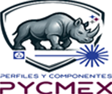
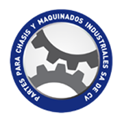
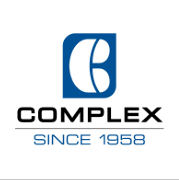

01
Asesoría y certificación ISO 9001:2015
Diagnosticamos, implementamos y preparamos tu Sistema de Gestión de la Calidad hasta que obtengas la certificación con un organismo acreditado.
Ver la ruta de certificación0%
Inicializando sistema de calidad
ADC Asesoría Directa en Calidad
Asesoría directa ISO 9001:2015
Implementamos tu sistema ISO 9001:2015, inspeccionamos tus soldaduras con ensayos no destructivos y capacitamos a tu equipo bajo DC-3. Sin intermediarios: trabajas directo con el especialista.
01Líneas de servicio
Desde el sistema de gestión hasta la última soldadura: acompañamos a tu empresa en cada punto donde la calidad se juega, con un especialista que te responde directamente.
Diagnosticamos, implementamos y preparamos tu Sistema de Gestión de la Calidad hasta que obtengas la certificación con un organismo acreditado.
Ver la ruta de certificación
Garantizamos la integridad de tus uniones con ensayos no destructivos y la calificación de soldadores y procedimientos.
Explorar los métodosCapacitamos a tu personal en seguridad industrial, soldadura, metrología y herramientas de calidad (Core Tools).
Ver los 9 temas
Verificamos que tus productos cumplan las especificaciones a lo largo de todo el proceso de producción, hasta el embarque.
Ver el proceso completo02ISO 9001:2015
ISO 9001:2015 demuestra que tu empresa opera con procesos controlados, medibles y enfocados en el cliente. Mejora tus procesos, aumenta tu competitividad y amplía tu alcance: nosotros te acompañamos en cada etapa.
La calidad no es un destino, es un proceso.
Punto de partida
Es el primer paso de nuestro compromiso con la calidad y la excelencia: alinea a tu equipo con los estándares internacionales y asegura el éxito del proyecto desde el día uno.
Evaluamos su situación actual frente a los requisitos de la norma y definimos la brecha real.
Diseñamos y desarrollamos procesos de acuerdo con ISO 9001:2015, a la medida de tu operación.
Fortalecemos las competencias de tu equipo para una correcta implementación.
Te apoyamos en la revisión, el ajuste y el cierre de hallazgos antes del día de la auditoría.
Te guiamos hasta obtener tu certificación con organismos acreditados.
03Cómo trabajamos
Implementación y mantenimiento del Sistema de Gestión de Calidad ISO 9001:2015 con un camino claro, calendarizado y sin sorpresas.
Radiografía honesta de dónde está tu sistema hoy, para decidir con datos y no con suposiciones.
Elaboramos tu diagrama de Gantt: actividades, responsables y fechas claras para sostener el sistema.
Una propuesta transparente, alineada al alcance y a los tiempos que acordamos contigo.
El especialista llega a tu planta con el programa en mano y comienza el acompañamiento.
04Inspección y calidad en soldadura
La seguridad de tus procesos y la calidad de tu producto empiezan en la soldadura. Inspeccionamos con personal certificado, equipo de última generación e informes que puedes mostrar a tu cliente.
Calidad que se ve, seguridad que se siente.
Verifica la calidad de la soldadura, los acabados y el cumplimiento de especificaciones.
Identifica discontinuidades superficiales y subsuperficiales en materiales ferromagnéticos.
Detecta discontinuidades conectadas a la superficie en metales ferrosos y no ferrosos, cerámicos y plásticos.
Detecta fallas internas, mide espesores y caracteriza materiales.
Inspecciones conforme a códigos ASME · AWS · API · AAR
Evalúa habilidades y desempeño de soldadores según las normas aplicables, para que cada junta la haga la persona correcta.
Verifica y valida la efectividad de tus procedimientos conforme a estándares internacionales.
Normas de referencia
Tu aliado en la calidad de la soldadura.
Cotizar inspección05Capacitación
Tu personal aprende, acredita competencias y tu empresa cumple. Programas prácticos en seguridad industrial, soldadura, metrología y herramientas de calidad.


Control de energías peligrosas
Trabajos en caliente
Operación segura
Elevación de personal
Prevención de caídas
Riesgo eléctrico
Conducción y maniobras
Medición confiable
Herramientas de calidad automotriz
¿Necesitas capacitar a tu equipo? Armamos el programa contigo.
Cotizar capacitación06Inspección de productos
Garantizamos que tus productos cumplan con las especificaciones deseadas y ayudamos a que tus proveedores mantengan altos estándares de calidad.
Validamos materiales, componentes y configuración antes de arrancar.
Detectamos desviaciones a tiempo, con la línea en marcha.
Seguimiento continuo del avance y de la conformidad.
Revisión final del producto terminado antes de salir.
Supervisamos que lo aprobado sea lo que realmente se carga.
Elaboramos el expediente con la evidencia de todo el proceso.
Las inspecciones de productos son un componente vital de tu programa de control de calidad: garantizan el control del proceso de fabricación y te protegen contra…
Cuéntanos qué producto y qué proveedor quieres verificar.
Cotizar inspección de producto07Por qué ADC
Aquí no hay capas de intermediarios ni reportes que nadie lee. Hay un especialista que conoce tu operación y se hace responsable del resultado.
Quien diagnostica es quien te acompaña y te responde. Sin intermediarios.
Inspectores y especialistas con certificación, bajo referencia ASNT niveles I, II y III.
Instrumentación END actualizada para resultados confiables.
Evidencia y hallazgos claros, listos para tu auditoría y para tu cliente.
ISO 9001:2015, ASME, AWS, API, AAR y requisitos DC-3 de la STPS.
Te ayudamos a resolver hallazgos y a sostener los resultados en el tiempo.
Tu aliado en la certificación ISO 9001:2015
08Clientes
Empresas industriales que han elegido la calidad como su ventaja competitiva.



09Preguntas frecuentes
¿No encuentras tu duda? Escríbenos y un especialista te responde directamente.
Preguntar por WhatsAppEs el estándar internacional para Sistemas de Gestión de la Calidad. Te ayuda a mejorar procesos, reducir riesgos, aumentar la satisfacción del cliente y ganar competitividad. ADC te acompaña con diagnóstico inicial, implementación, capacitación, preparación para auditoría y soporte durante todo el proceso.
No. El certificado lo emite un organismo de certificación acreditado. Nosotros preparamos a tu empresa y la guiamos hasta obtener su certificación con organismos acreditados.
Iniciamos con el curso de sensibilización de la norma. Después hacemos el diagnóstico de tu situación actual, diseñamos el programa de mantenimiento con diagrama de Gantt, te enviamos la cotización y, al aprobarla, arrancamos el plan de visitas.
Inspección visual (directa o remota), partículas magnéticas (visibles y fluorescentes), líquidos penetrantes y ultrasonido industrial convencional (haz recto y haz angular), conforme a códigos ASME, AWS, API y AAR. También calificamos soldadores y procedimientos de soldadura.
Sí. Desarrollamos capacitación de acuerdo a DC-3 en bloqueo y etiquetado, corte y soldadura, montacargas, plataformas aéreas, trabajo en alturas, trabajos en energía eléctrica, vehículos pesados, metrología dimensional y Core Tools (PPAP, APQP, AMEF y Plan de Control).
Llena el formulario de contacto, escríbenos por WhatsApp al 811 202 6054 o envía un correo a rlopez_h9@yahoo.com.mx. Revisamos tu necesidad, hacemos el diagnóstico y te enviamos la cotización.
10Contacto
Cuéntanos qué necesitas. Revisamos tu caso, hacemos el diagnóstico y te enviamos una cotización clara. Un especialista te responde directamente.
“Un paso a la vez, se llega a la cima”
Al enviar, abrimos WhatsApp con tu solicitud lista para mandar.
Solo falta que presiones “Enviar” en la conversación. Si no se abrió, haz clic aquí.